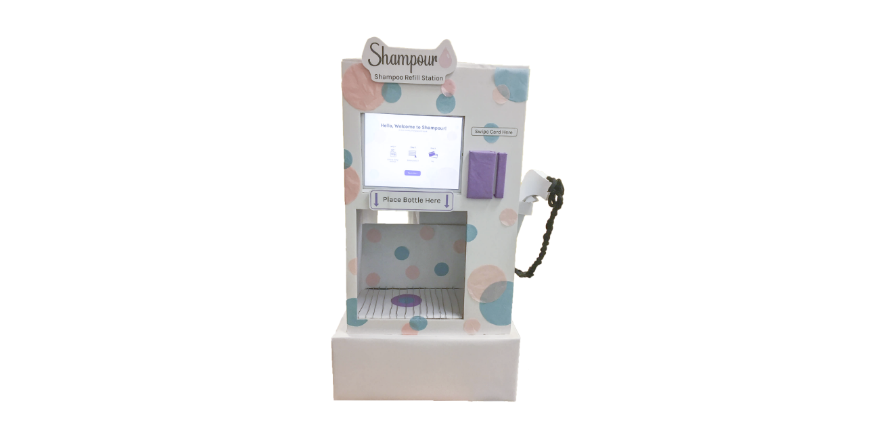

In general, users found the Shampour kiosk to be pretty straightforward and easy to use. However, there were some issues with
refinement and extra steps that could be added to make for a smoother experience. Below are the feedbacks and problems that we have found during testing.
User testing 1:
- Some users were confused as to when they should put a bottle under the dispenser, and for that, we added a pop-up that tells users when to put
their bottles before they start filling for shampoo.
- Users wanted to have set volumes commonly used for an easier experience.
User testing 2:
- Suggestion to add grating or something simulating it to show that if there were to have any spillage, that wouldn’t be an issue.
- Some of them suggested that we add a scent option for our filters, however, for the sake of time and simplicity, we opted to remove
the scent option.
- Some people don’t realize when the filling process is done -> So we add a confirmation message to tell them that the process is done
and they could proceed to checkout.
- A couple of people that chose the nozzle method to fill in seems to find the “Fill in your bottle with the nozzle on the right” pop up
confusing. We expect them to click the continue button on the pop-up but some of them take the nozzle and just wait without clicking the
continue button. -> So we change the wording to “Pick up the nozzle on the right” and removed the continue button and use a timer instead
so that the pop-up will disappear after 3 seconds. Then the customer could start filling their bottle.
- Some people wish there's a search bar for people that wanted to look for a specific product quickly, which we then added for the ease of
finding a specific product.
- Some people wish for a price filter for ease of price comparison; the filter was then added on a later iteration.
